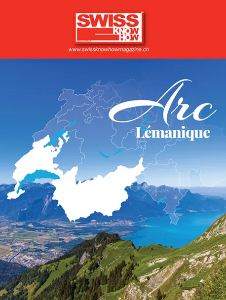

En bref
La Région de Nyon soutient les réseaux agro-écologiques, les corridors biologiques, la renaturation des cours d'eau et la lutte contre les plantes invasives. Gudrun Russig présente la restauration du Bois de Chênes, dotée de 300 000 francs, qui protège des coléoptères rares vivant sur les chênes centenaires et sert de lieu de sensibilisation pour les écoles. Elle évoque le Zoo de la Garenne, l'objectif de réduire de 40 % les émissions de CO2 d'ici 2030 avec le Grand Genève, le projet de « corridors noirs » contre la pollution lumineuse et les Assises européennes de la transition énergétique.
« Un simple mégot de cigarette peut polluer un m³ d'eau à lui tout seul ! »— Gudrun Russig
L'interview intégrale
Quels sont les grands axes de la politique environnementale de la Région de Nyon ?
La Région agit en faveur de la biodiversité en soutenant les réseaux agro-écologiques et en veillant à préserver des corridors biologiques dans le district. Ceci comprend par exemple des plantations d’arbres, pour améliorer la qualité de vie de toutes les espèces. Dans ces projets, nous collaborons avec le Canton de Vaud, l’agglomération du Grand Genève et des partenaires privés. La Région de Nyon promeut en outre les énergies renouvelables, finance des acteurs locaux pour la sensibilisation à l’environnement et prépare l’ensemble du district au changement climatique.
Pourriez-vous nous parler du projet du Bois de Chênes ?
C’est un beau projet, qui est désormais en voie d’achèvement. En accord avec les communes, la Fondation du Bois de Chênes et les partenaires, la Région de Nyon a alloué 300 000 francs à la restauration, dans les règles de l’art, de la vieille ferme-château datant des années 1760, mais aussi à la préservation de la faune et de la flore. La Région contribue ainsi à la protection du lucane cerf-volant et du grand capricorne, des coléoptères qui survivent uniquement sur les chênes centenaires. Une fois les aménagements terminés, un intendant sera chargé d’accueillir les classes, de surveiller la réserve et de prévenir les abus comme le passage de VTT ou la cueillette d’espèces protégées. Je me réjouis que ce havre de paix pour les arbres sénescents, le lichen, les champignons, les coléoptères et autres abeilles soit ainsi mis en valeur.
Quels autres projets de biodiversité soutenez-vous à l’heure actuelle ?
La biodiversité me tient particulièrement à cœur et la Région s’emploie à la préserver en collaboration avec les communes et les agriculteurs. Nous sommes actifs dans la renaturation des cours d’eau, avec le soutien du Canton de Vaud : il s’agit de créer des endroits sécurisés pour les animaux et de lutter contre les plantes exotiques envahissantes, comme le buddleia ou la renouée japonaise, qui mettent en péril la flore indigène et dont nous endiguons la propagation. Par ailleurs, la Région de Nyon est membre du comité de la Fondation du Zoo de la Garenne : ce site agrandi en 2016 est exceptionnel au niveau européen en raison de son altitude et de ses espèces indigènes, telles que le loup ou le gypaète barbu, dont le zoo contribue à prévenir l’extinction.
Comment favorisez-vous la transition énergétique du territoire ?
Nous œuvrons avec le Grand Genève et les communes du district, qui ont fixé un objectif ambitieux : réduire leurs émissions de CO2 de 40 % d’ici 2030. La Région les accompagne dans cette démarche. Le soir de la Saint-Valentin nous avons organisé une descente de ski aux flambeaux, afin de sensibiliser les habitants à la pollution lumineuse qui affecte de nombreuses espèces d’oiseaux et d’insectes. C’est tout l’intérêt du projet de corridors noirs, qui prévoit l’extinction des lumières ou la réduction de la luminosité sur les routes et dans les villages. La Région participe à l’organisation des Assises européennes de la transition énergétique : elles se sont déroulées l’an dernier à Palexpo et seront de retour dans notre agglomération dans 3 ans.
Quelles actions menez-vous en matière de sensibilisation à l’environnement pour les scolaires et le grand public ?
Le Bois de Chênes est une pièce maîtresse de notre politique de sensibilisation : les élèves viennent y apprendre les bons gestes, les bons comportements, ils comprennent le caractère néfaste du littering : n’oublions pas qu’un simple mégot de cigarette peut polluer un m3 d’eau à lui tout seul ! La Région sensibilise la population pour favoriser la prise de conscience, car il en va de la qualité de vie de tous.
Texte paru dans Swiss Knowhow – Arc lémanique (septembre 2019), p. 5.
Personnes citées
- Gudrun RussigResponsable de l'environnement, municipale à Signy-Avenex

Paru dans
Swiss Knowhow – Arc lémanique (septembre 2019)
2019 · page 5 · article original en français
Lire l'article complet PDF